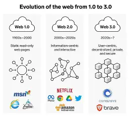

The evolution of the web has been marked by significant milestones, from the early days of static HTML pages to the dynamic, interactive experiences of today.

Web 1.0, also known as the "read-only" web, was characterized by static web pages that were primarily informational. Users could only consume content without any interaction or contribution.
Web 2.0, also known as the "read-write" web, introduced user-generated content and social media platforms. Users could now interact with content and contribute to the web experience.
Web 3.0, also known as the "semantic" web, aims to make the web more intelligent and interconnected by enabling machines to understand and process information in a more human-like way.